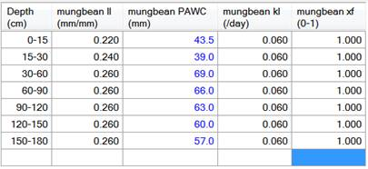
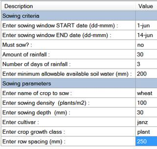
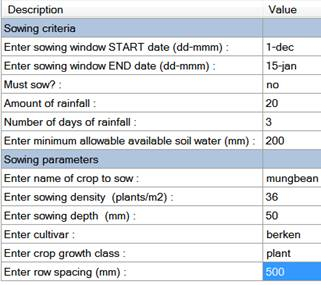
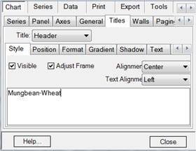
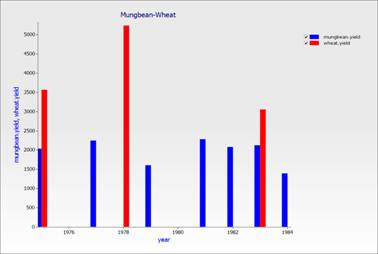
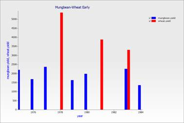

Wheat / Mungbean Opportunity Cropping
In a previous exercise we reset the starting conditions each year. We are not going to do this resetting in this exercise. Instead we are going to look at how to change what is sown based on these differing starting conditions; specifically, starting soil moisture.
In this exercise you will use sowing rules to opportunistically plant mungbean and wheat crops over a 10 year period without resetting water or nitrogen etc. You will observe the effect of this rotation on soil biomass nitrogen and the response of the rotation to the different sowing rules.
1. Start a new simulation using "Continuous Wheat.apsim"
2. Rename simulation to "MungbeanWheat". Save the file as “Opportunity Cropping.apsim”.
3. Choose the Goondiwindi weather. Set start and end dates to 1/4/1974 - 30/4/1984 (10 years)
4. Select the “Heavy Clay” soil from the training toolbox. This soil doesn't have crop lower limits for mungbean, so you will need to add these new crop properties to the soil. Open the water component and rename the sorghum component to mungbean. See “Core 5-Long Term Simulations” for more information on adding new crops. Set LL, PAWC, KL and XF values to the following:

Make sure you call the component "mungbean". It must have the same name as the crop component under the Paddock component.
5. Set the initial water to 50% full - filled from top.
6. Set the initial nitrogen to 140 kg/ha NO3 and 0 kg/ha NH4, evenly distributed.
7. Add a mungbean crop component to the Paddock , leaving the wheat component alone.
8. Replace the Sowing rule with the Sow using a variable rule from the toolbox and rename to "Wheat sowing - Janz". Change the properties to match the image below:

9. We want to sow an earlier maturing cultivar (if the sowing conditions for Janz is not met by 14-jun) so make a copy of this rule but change the window to 15-jun to 1-aug and the cultivar to Hartog. Rename this new rule to "Wheat sowing - Hartog"
10. Rename the harvesting rule to "Wheat harvesting" - make sure it points to wheat.
11. Rename the Sowing fertiliser rule to "Wheat sowing fertiliser". Make sure it points to wheat and set the amount to 70kg/ha of urea_n.

12. Duplicate one of the wheat sowing rules and rename it to "Mungbean sowing". Set the parameters to:
13. Duplicate the wheat harvesting rules and rename to “Mungbean Harvesting”. Change the crop to harvest to mungbean.
14. Report the following variables:
|
Component
|
Variable
|
Description
|
|
Clock
|
year
|
|
|
Heavy Clay
|
biom_n()
|
Summed over profile.
|
|
Crop
|
yield
|
Both crops will report their yield. You don’t need to report each separately.
|
15. Make sure reporting frequency is set to “harvesting”.
16. Create a linked copy of this simulation and rename it to “MungbeanWheatEarly”. See “Core – 4 Sowing A Crop” for more information on linking simulations.
17. Unlink the mungbean sowing rule and change the sowing window to 1-nov to 1-jan.
18. Run all simulations.
19. Create separate bar graphs of Year vs Mungbean Yield for each simulation. The easiest way to do this is to create the graph for one simulation then drop it onto the other simulation.
20. Change the Titles of each graph identifying them as "Mungbean-Wheat" and "Mungbean-Wheat Early". To do this, right click the graph and select “Format graph”. Click the “Titles” tab and enter the text in the box. Click “Close” when finished.

